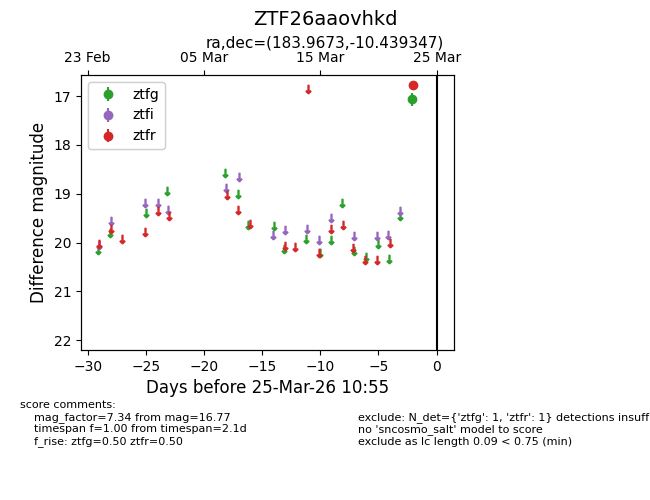
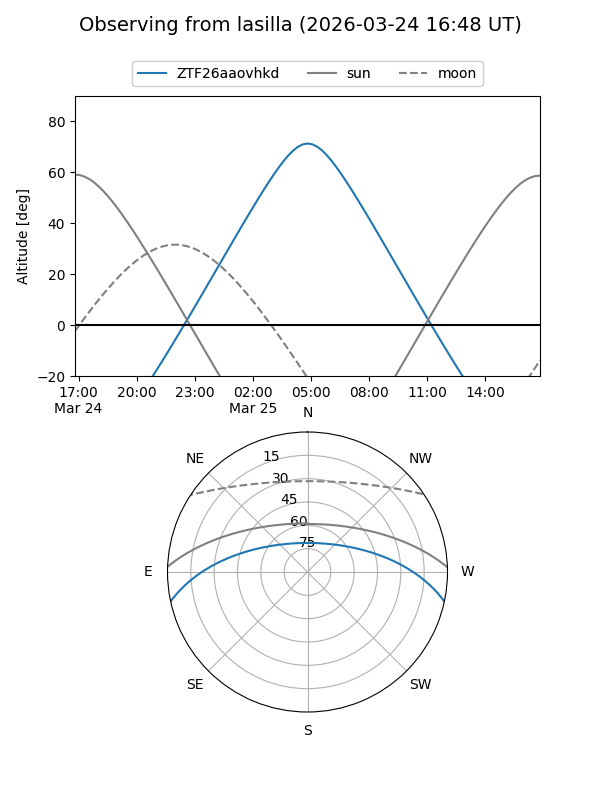
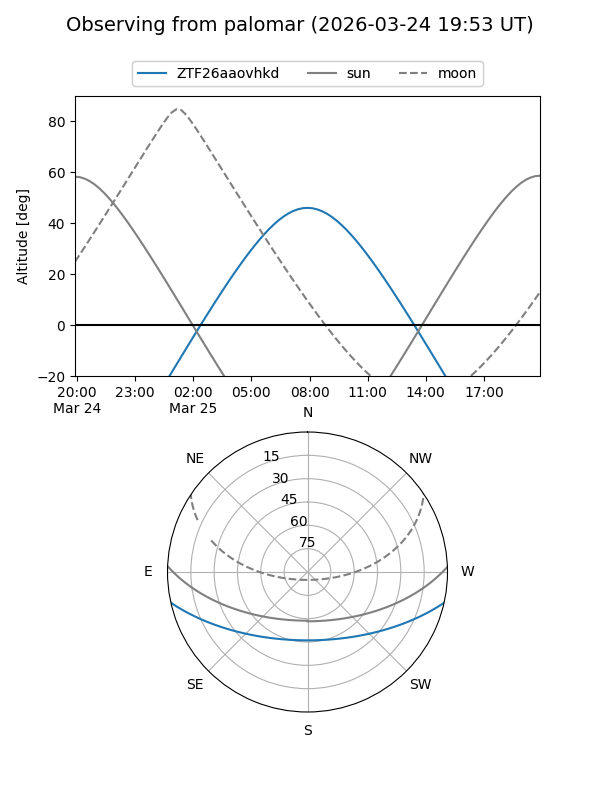

ZTF26aaovhkd
Target ZTF26aaovhkd at 2026-03-25 10:57
Aliases and brokers:
FINK: link
Lasair: link
ALeRCE: link
alt names
ZTF26aaovhkd (ztf,fink_ztf)
Coordinates:
equatorial (ra, dec) = 183.9673,-10.43935
equatorial (HMS+DMS) = 12:15:52.15,-10:26:21.65
galactic (l, b) = (288.8118,+51.45461)
Flags:
Photometry:
last ztfg=17.07, ztfr=16.77
1 ztfg, 1 ztfr detections
Lightcurve

Visibility


Additional plots